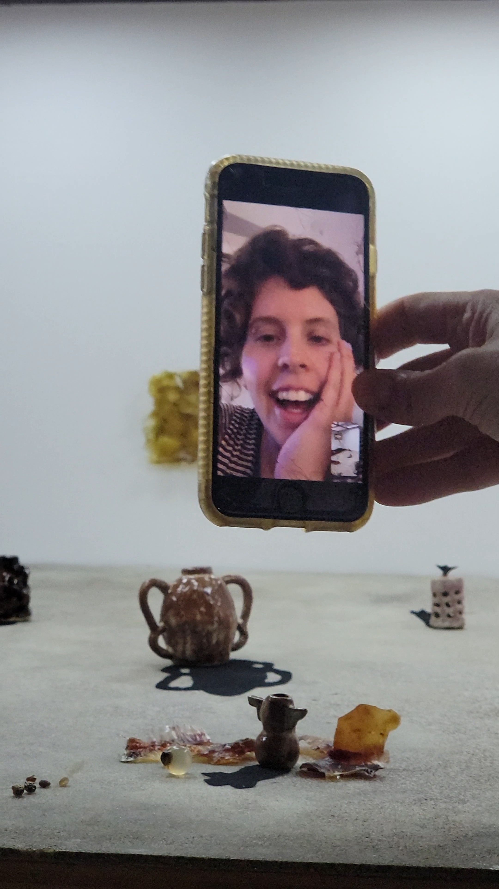
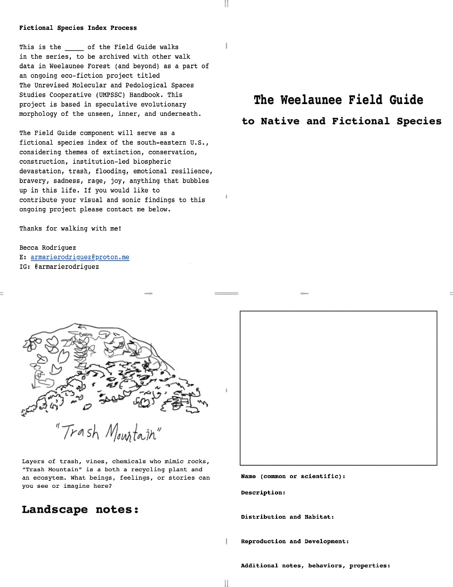
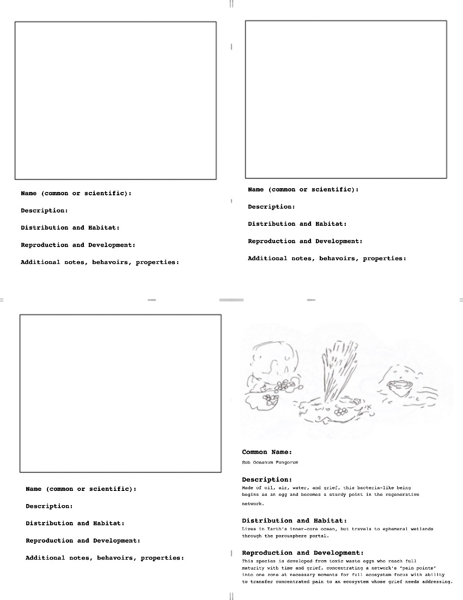
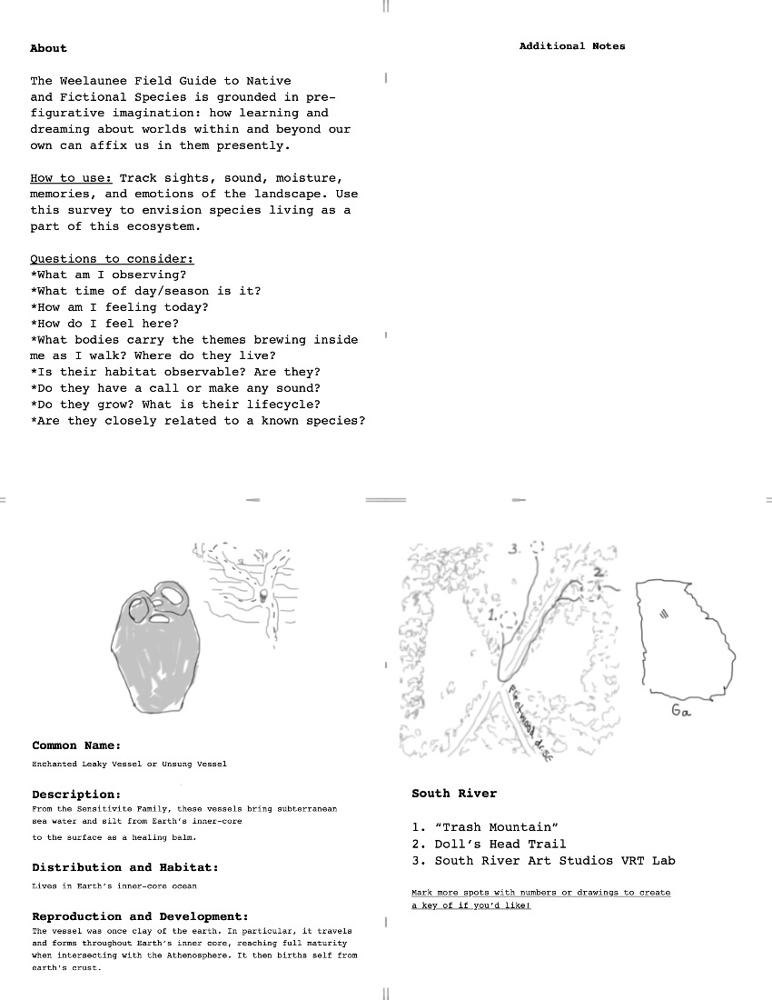
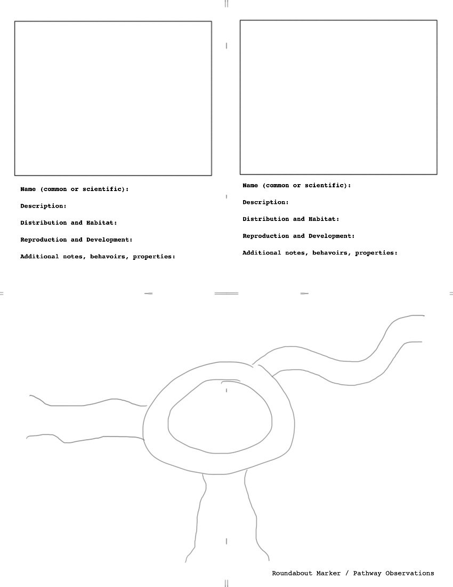

Shown as a one-day solo exhibition in October 2023 at the Dick Lane Velodrome in East Point, Ga and the month of November 2023 at Proyectos Sidewalk of Ger-Art Gallery in Atlanta, Ga, Beats and Bodies of Inner-earth encouraged playful consideration of our micro and macro evolutionary morphology, through both the 12:1 scale and lifesize work. Using sound, ceramics, bioplastics, papermaking, trash, and various natural materials, this series birthed new ecosystems in response to both biospheric devastation and great curiousity of our nonhuman beginnings. Vessels and eggs are repeated motifs whether holding sound, becoming shadow, or occupying a part of a larger body.
Images below courtesy of Harrison Wayne and Annalise Nelson





*u**f*o*u*n*d**
s*e*c*r*e*t****m*s*g*:*]**
The following are pages from a Fictional Species ID walk in so-called Atlanta, formatted to be 1/4 letter page & single-stitch bound for logging/indexing on fictional ID walks. Walker are encouraged to intimately explore the landscape while using the blanks to index fictional and existing species they may encounter within the booklet. Walkers' findings will be formatted into a fictional species index of the north & southeastern U.S., which considers themes of extinction, conservation, construction, institution-led biospheric devastation, trash, flooding, emotional resilience, bravery, sadness, rage, joy, anything that bubbles up in this life.
First used at South River Art Studios and Dolls Head Trail, Atlanta, Ga.



